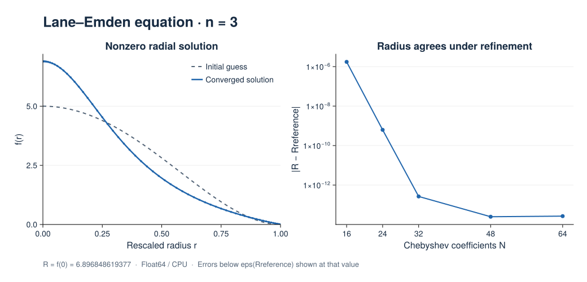

Lane–Emden Equation
The Lane–Emden equation describes a spherically symmetric polytropic fluid. This example follows the nonlinear BVP guide with a physical problem whose nonzero solution needs a full Newton Jacobian.
Radial formulation
For polytropic index $n=3$, the normalized Lane–Emden equation is
\[\theta''(\xi)+\frac{2}{\xi}\theta'(\xi)+\theta(\xi)^3=0, \qquad \theta(0)=1,\quad \theta'(0)=0.\]
Its first zero $R$ is unknown. Set $r=\xi/R$ and $f(r)=R\theta(Rr)$ to obtain a problem on a fixed unit interval:
\[rf''+2f'=-rf^3,\qquad f'(0)=0,\quad f(1)=0.\]
For this index, $R=f(0)$. The benchmark radius is $R\approx6.896848619376960375454528$. See Boyd (2011), Chebyshev Spectral Methods and the Lane-Emden Problem for the spectral formulation and reference calculations.
This script treats $r$ as a one-dimensional coordinate, includes the radial terms explicitly, and imposes $f'(0)=0$. Multiplying by $r$ removes division at the origin. The script also checks the limiting equation $3f''(0)+f(0)^3=0$.
Two Chebyshev tau unknowns enforce the endpoint conditions of this interval formulation.
Solution and refinement
Newton iteration starts from $f_0(r)=5(1-r^2)^2$. The equation also admits the trivial solution $f=0$; the reference-radius check ensures that the intended nonzero branch was found.

The left panel uses 64 Chebyshev coefficients with dealiasing factor 2 on the CPU in Float64. It recovers $R=6.896848619377$. The right panel varies the resolution while retaining the same initial guess. Radius errors reach the roundoff range; errors below eps(Rreference) are displayed at that value. The CSV retains the measured values without this plotting floor.
The default run checks the radius, weighted radial residual, central limiting equation, boundary values, and positivity. Coarse refinement runs report their errors without applying the fine-resolution accuracy thresholds. These results verify this radial problem; they do not establish general spherical-domain support.
PNG · SVG · Profiles (CSV) · Refinement data (CSV) · Julia script
{kind=link}
{kind=link}
Run the example
From the repository root:
julia --project examples/bvp/lane_emden.jlUse the shared CairoMakie commands to reproduce the figure and refinement study.
Complete script
using Tarang
"""
lane_emden_example(; Nr=64, check_accuracy=true)
Solve the n=3 Lane–Emden equation as a radial Chebyshev BVP.
Run with `julia --project examples/bvp/lane_emden.jl`.
"""
function lane_emden_example(; Nr=64, check_accuracy=true)
coords = CartesianCoordinates("r")
dist = Distributor(coords; dtype=Float64, device=CPU())
rb = ChebyshevT(coords["r"]; size=Nr, bounds=(0.0, 1.0), dealias=2.0)
domain = Domain(dist, (rb,))
f = ScalarField(domain, "f")
radius = ScalarField(domain, "radius")
tau1 = ScalarField(dist, "tau1", (), Float64)
tau2 = ScalarField(dist, "tau2", (), Float64)
r, = local_grids(dist, rb)
initial = 5 .* (1 .- r.^2).^2
ensure_layout!(radius, :g)
get_grid_data(radius) .= r
ensure_layout!(f, :g)
get_grid_data(f) .= initial
problem = NonlinearBoundaryValueProblem([f, tau1, tau2])
lift_basis = derivative_basis(rb, 2)
add_parameters!(problem; radius, fr=Differentiate(f, coords["r"], 1),
l1=lift(tau1, lift_basis, -1), l2=lift(tau2, lift_basis, -2))
# Multiplying the radial equation by r removes explicit division at r=0.
add_equation!(problem, "radius*Δ(f) + 2*fr + l1 + l2 = -radius*f*f*f")
add_bc!(problem, "∂r(f)(r=0) = 0")
add_bc!(problem, "f(r=1) = 0")
solver = BoundaryValueSolver(problem; tolerance=1e-8, max_iterations=20)
solve!(solver)
ensure_layout!(f, :g)
solution = copy(get_grid_data(f))
fr = evaluate(Differentiate(f, coords["r"], 1))
frr = evaluate(Δ(f))
ensure_layout!(fr, :g)
ensure_layout!(frr, :g)
derivative = copy(get_grid_data(fr))
second_derivative = copy(get_grid_data(frr))
residual = r .* second_derivative .+ 2 .* derivative .+ r .* solution.^3
# For n=3, the rescaling gives R = f(0); this reference excludes the zero branch.
reference_radius = 6.896848619376960375454528
recovered_radius = solution[1]
radius_error = abs(recovered_radius - reference_radius)
residual_error = maximum(abs, residual)
origin_error = abs(3 * second_derivative[1] + solution[1]^3)
wall_error = max(abs(derivative[1]), abs(solution[end]))
@info "Lane–Emden verification" Nr recovered_radius radius_error residual_error origin_error wall_error
# Coarse runs in the refinement plot report errors without applying the
# resolved-solution thresholds; the default example always checks them.
if check_accuracy
@assert radius_error < 1e-7
@assert residual_error < 1e-6
@assert origin_error < 1e-5
end
@assert all(isfinite, solution)
@assert recovered_radius > 1
@assert wall_error < 1e-9
@assert minimum(solution) > -1e-9
return (; r=collect(r), initial, solution, residual, recovered_radius,
reference_radius, radius_error, residual_error, origin_error, wall_error)
end
if abspath(PROGRAM_FILE) == @__FILE__
lane_emden_example()
end